Overview
For part a I used PixNerd, a pretrained text-to-image flow model, to visualize the training and sampling process, add classifier-free guidance, and build edits, visual anagrams, and hybrid images from velocity predictions. In Part B, I build a flow-matching models on MNIST as a single step denoising UNet, then a time-conditioned and a class-conditioned UNet.
Throughout, time \(0\) is noise and time \(1\) is data, and the model predicts the velocity \(x_1 - x_0\). Part A uses \(v_c + w\,(v_c - v_u)\) with \(w = 7\) for guidance, and Part B uses \(v_u + \gamma\,(v_c - v_u)\) with \(\gamma = 5\).
Part A: Exploring the Power of Flow Models
Part A1: Visualizing Training and Sampling
For Sections 1.1–1.5 I used a photo of my stuffed panda, lying on its side on a pile of other plush toys with a sprig of red berries and a magazine with pink and yellow lettering behind it. The provided preprocessing center-crops it to a square, resizes it to \(512 \times 512\), and scales RGB to \([-1, 1]\).
1.1 Constructing noisy training inputs

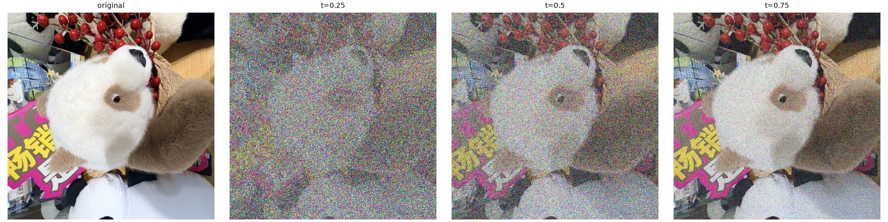
interpolate computes
\[x_t = (1 - t)\,\epsilon + t\,x_1,\]
with \(\epsilon \sim \mathcal{N}(0, I)\) drawn once and reused at \(t = 0.25, 0.50, 0.75\). At \(t = 0\) it returns the noise
and at \(t = 1\) the image. At \(t = 0.25\) only the lower frequeuncy light and dark regions survive and the panda is hard to make out, at \(t = 0.50\) the shape, the berries, and the magazine colors are visible through the grain, and at \(t = 0.75\) the image is clearly recognizable with fine noise on top.
1.2 Classical denoising

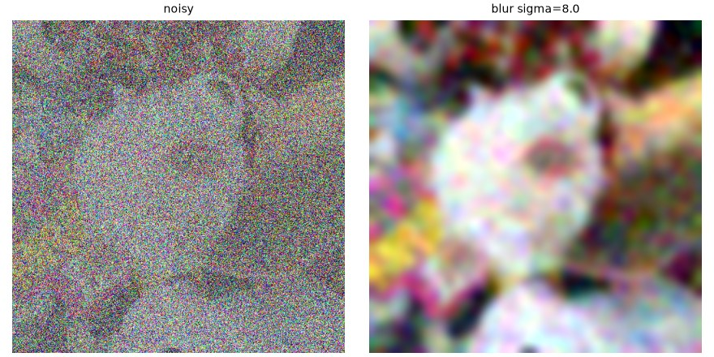

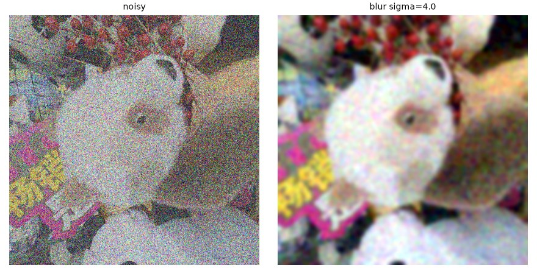

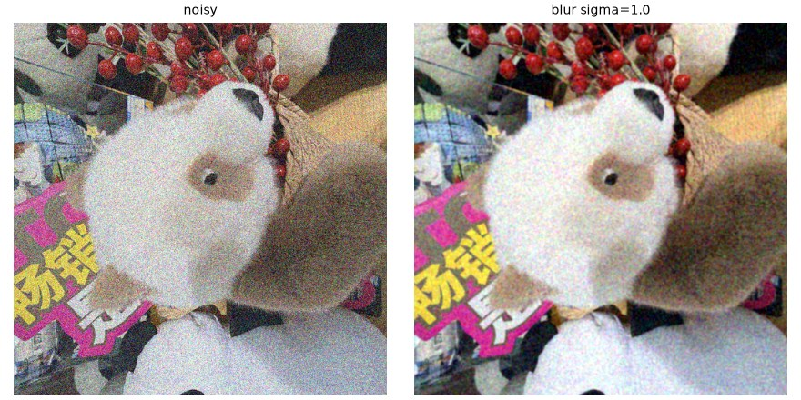
Dividing \(x_t\) by \(t\) restores the image's amplitude before filtering. I swept \(\sigma \in \{1, 2, 4, 8, 16\}\) and kept the one with lowest MSE to the clean image, and the result was \(\sigma = 8\) at \(t = 0.25\), \(\sigma = 4\) at \(t = 0.50\), and \(\sigma = 1\) at \(t = 0.75\). The blur strength needed falls as \(t\) grows, since there is less noise to average away. At \(t = 0.25\) the \(\sigma = 8\) blur removes the noise but leaves only colored blobs, at \(t = 0.50\) the panda is recognizable but soft, and at \(t = 0.75\) the light \(\sigma = 1\) blur keeps most of the detail while still leaving speckle. In every case the filter trades noise for sharpness, and no setting recovers the fur or the lettering.
1.3 One-step denoising

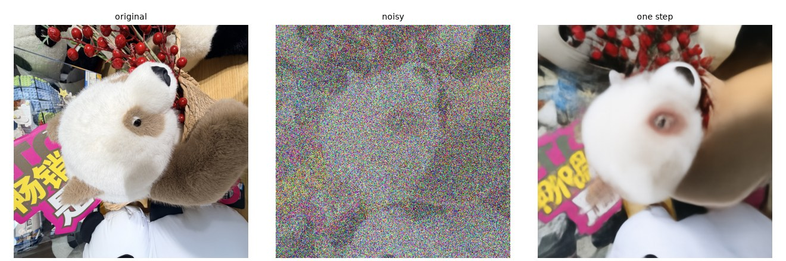

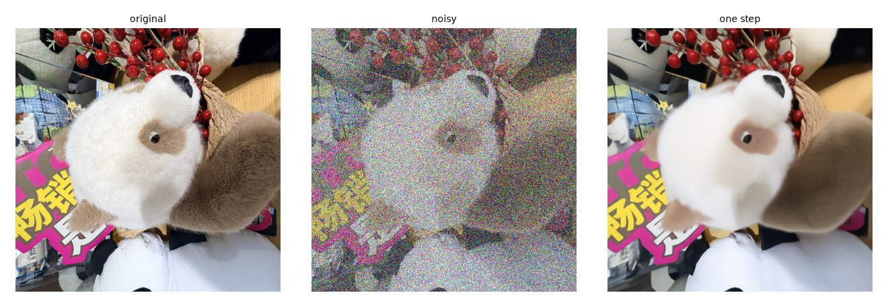

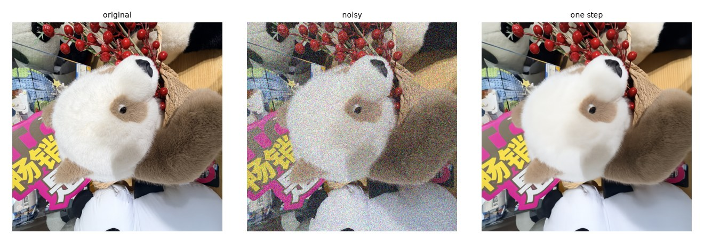
one_step_denoise calls the model once with “a high quality photo” and returns
\[\hat{x}_1 = x_t + (1 - t)\,v_\theta(x_t, t, c).\]
The velocity has shape \(1 \times 3 \times 512 \times 512\), dtype float32, on cuda:0. At \(t = 0.75\) the estimate is close to the original and sharper than any Gaussian blur. At \(t = 0.50\) the panda and background are right but the fur is smooth and the lettering is garbled. At \(t = 0.25\) the model has to invent most of the image, and the face melts into a smooth blob, the eye becomes a dark hollow, and the magazine text turns into made-up characters, though the overall layout and colors are still correct.
1.4 Visualizing velocity


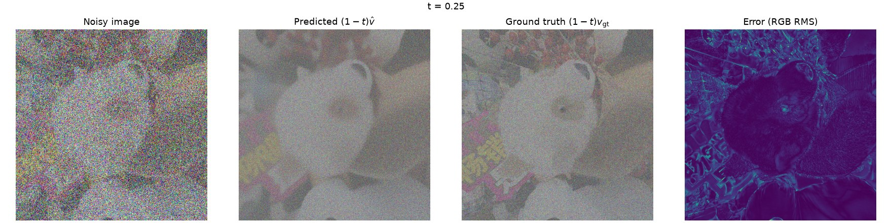

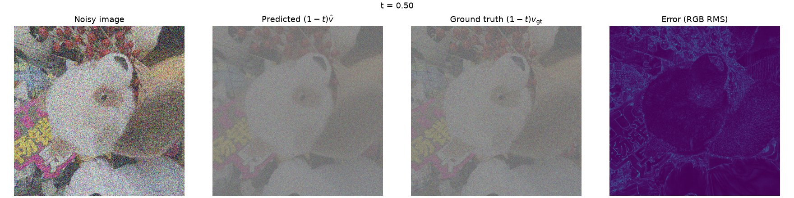

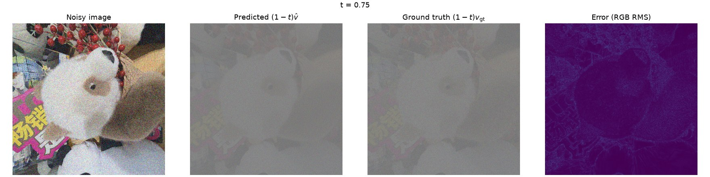
The predicted update is \((1 - t)\,\hat{v}_t\) with \(\hat{v}_t = v_\theta(x_t, t, c)\), and the ground-truth update uses the saved noise, and \(v_{\mathrm{gt}} = x_1 - \epsilon\), so \((1 - t)\,v_{\mathrm{gt}} = x_1 - x_t\). The error map is the per-pixel RMS over RGB, \[E_t = \sqrt{\operatorname{mean}_{\mathrm{RGB}}\big[(1 - t)(\hat{v}_t - v_{\mathrm{gt}})\big]^2}.\] All updates share one symmetric RGB range with zero at middle gray, and the heatmaps use \(v_{\min} = 0\) and \(v_{\max} = \) the maximum over the three error maps at all three times. Both updates look like a flattened, gray copy of the image, because they are the image minus the noisy input. The predicted and ground-truth updates are nearly identical at \(t = 0.75\) and the error map is almost uniformly dark. At \(t = 0.25\) the error concentrates along edges, and it is highest around the outline of the panda, the berries, and especially the lettering on the magazine, where the model cannot know the exact strokes from such a noisy input. Smooth regions like the fur and the white cloth have low error at every time.
1.5 Iterative denoising with Euler sampling

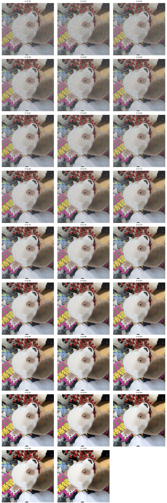

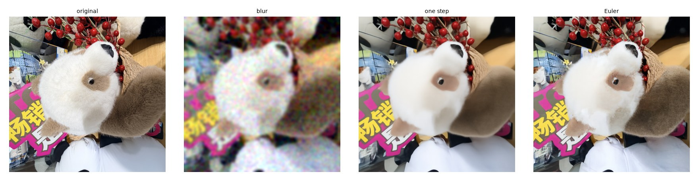
euler_sample repeats
\[x_{t+h} = x_t + h\,v_\theta(x_t, t, c),\]
recomputing the velocity at every step and shortening the last step so \(t\) lands on exactly \(1\). From \(t = 0.50\) with
\(h = 0.02\) that is 25 updates. On the same input, the MSEs to the original were \(0.0324\) for the blur, \(0.0120\) for one-step,
and \(0.0135\) for Euler. The blur is the least useful, since it is both noisy and soft. The one-step estimate is smooth and faithful to the layout but loses texture. The Euler result has sharp fur, berries, and lettering, but the details are the model's own, and the eye has moved slightly and the magazine characters differ from the original. That is why its MSE is a little higher than one-step despite looking far better, since each Euler step commits to the model's current guess and later steps refine that guess rather than the original.
1.6 Generating images from noise

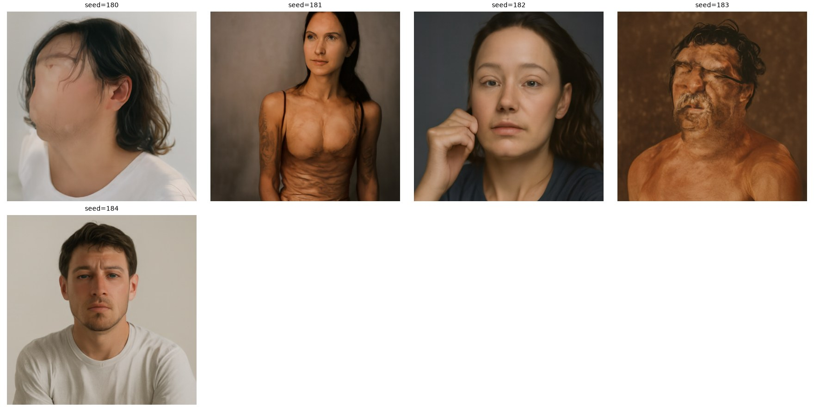
Starting from five Gaussian states with seeds 180 through 184 and integrating from \(t = 0\) to \(1\) in 50 Euler steps gives the images above. All five are portraits of people, which says more about the prompt than the noise, and “a high quality photo” is apparently dominated by portrait photography in the training data. Seeds 181, 182, and 184 are plausible photos with soft studio lighting. Seed 180 produces a distorted face with no features, and seed 183 is a brown, heavily textured figure with a melted face, so without guidance the model often fails to commit to a coherent subject.
Part A2: Classifier-Free Guidance

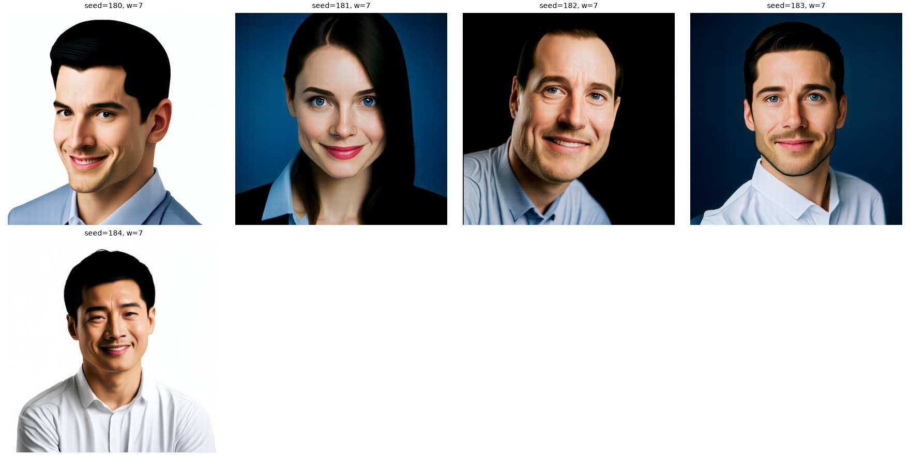
cfg_velocity evaluates the model twice at the same \(x\) and \(t\), once with the prompt and once with the empty string
as the null condition, and returns
\[v_{\mathrm{cfg}} = v_c + w\,(v_c - v_u).\]
With \(w = 0\) this is the plain conditional velocity. Compared with Section 1.6 on the same seeds, every sample becomes a sharp, saturated corporate headshot, and each one shows a smiling person in a collared shirt against a plain white or deep blue background. The two failures from Section 1.6 (seeds 180 and 183) are now clean faces. Colors and contrast are much stronger, skin is smoother, and the five images are far more similar to one another, so guidance trades the variety and realism of the unguided samples for prompt adherence and polish.
Part A3: Creative Applications
Every result in this section uses Euler step size \(h = 0.02\), CFG weight \(w = 7\), the empty prompt for the unconditional branch, and noise seed 180.
3.1 Image-to-image editing

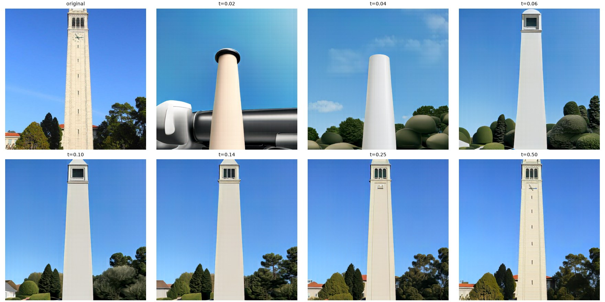

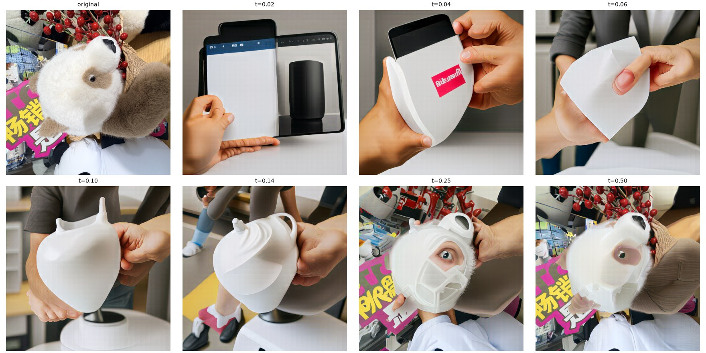

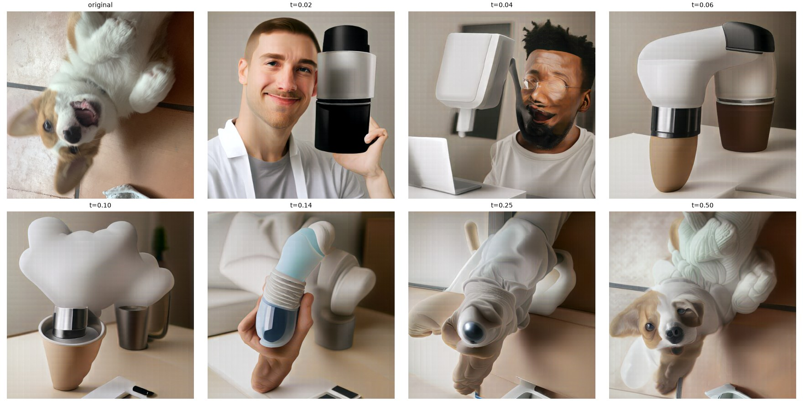
edit forms \((1 - t_{\mathrm{start}})\,\epsilon + t_{\mathrm{start}}\,x_1\) and integrates from \(t_{\mathrm{start}}\) to \(1\)
with CFG and “a high quality photo”. Smaller starting times leave less of the input. At \(t = 0.02\) and \(0.04\) the outputs are unrelated objects that share only the rough layout, and I get a chrome pipe and a smooth white spire for the Campanile, and phones and white boxes held in hands for the panda and the corgi. The Campanile is recognizable from \(t = 0.06\), when a tower with a square top appears, and by \(t = 0.25\) the arches, clock, and trees are back. My photos need more, and the panda is a white ceramic mask until \(t = 0.25\), where the berries and magazine return, and only at \(t = 0.50\) does the fur look like fur. The corgi is a white plastic shape until \(t = 0.25\) and becomes a dog again at \(t = 0.50\). A simple, high-contrast subject like the tower survives much smaller starting times than a cluttered photo.
Hand-drawn and web images

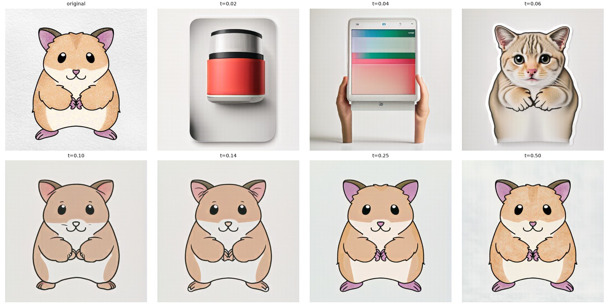

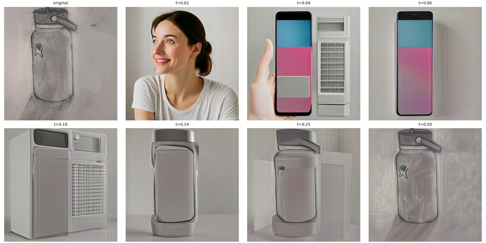

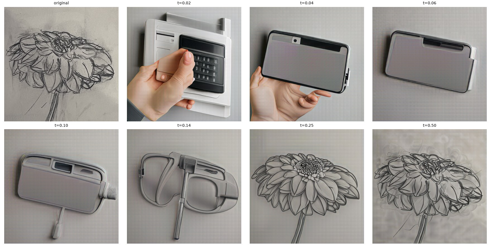
The web image is a flat cartoon hamster illustration. The two drawings are my pencil sketches, and they show a Hydro Flask water bottle and a flower. The hamster snaps back quickly, and at \(t = 0.06\) it has become a photo-realistic kitten sticker, and from \(t = 0.10\) on it is a clean, redrawn version of the same cartoon with smoother lines and flatter shading, so the model treats it as a finished illustration rather than something to photograph. The pencil drawings go through a long stretch of being rendered as gray plastic gadgets, and the bottle becomes a phone, an air conditioner, and a camera, while the flower becomes a card reader and a handheld device. The bottle only becomes a bottle at \(t = 0.25\), shaded like a product render, and at \(t = 0.50\) it is my sketch with cleaner lines. The flower turns into a crisp botanical line drawing at \(t = 0.25\) and keeps my loose strokes at \(t = 0.50\). Faint pencil on gray paper carries little signal, so the model needs a large starting time before it reads the subject at all.
3.2 Text-guided image editing

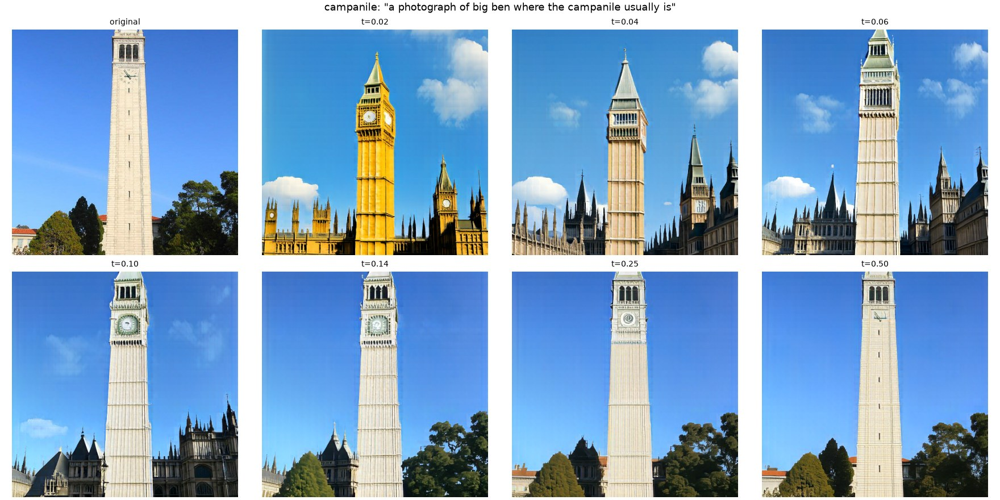

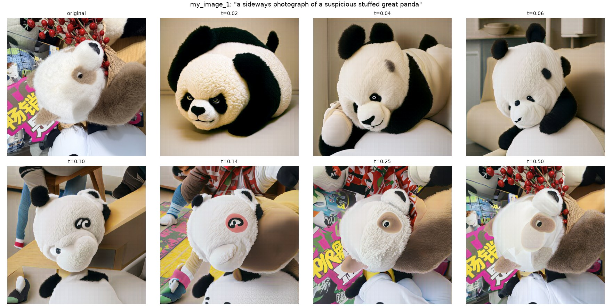

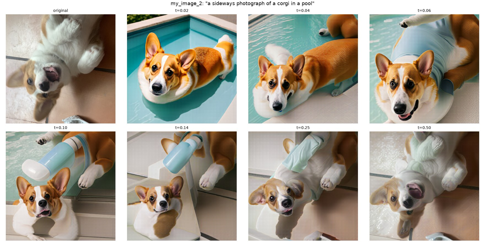
Here the generic photo prompt is replaced by an editing prompt for each image, using the same seven starting times. For the Campanile, \(t = 0.02\) to \(0.06\) produce a convincing Westminster scene with a gothic clock tower and the Houses of Parliament behind it, but the tower no longer has the Campanile's proportions. At \(t = 0.10\) and \(0.14\) the Campanile keeps its shape and gains a clock face and a gothic building at its base, which is the blend I was after. By \(t = 0.25\) only a faint clock remains and at \(t = 0.50\) the edit is gone. For the panda, small starting times give a real-looking black and white panda plush with a frown, and the “suspicious” expression is clearest at \(t = 0.02\). From \(t = 0.10\) the original brown and white toy returns with a few black patches, and the prompt's effect is mostly gone by \(t = 0.25\). For the corgi, \(t = 0.02\) and \(0.04\) put a corgi in a turquoise pool viewed from above, which is exactly the prompt, but it is a different dog in a different pose. At \(t = 0.10\) and \(0.14\) the original upside-down puppy is back with pale blue bottles and tiles standing in for the pool, and at \(t = 0.50\) the image is nearly the original. In all three cases the useful window is roughly \(t = 0.06\) to \(0.14\), where the prompt changes the content without discarding the photo.
3.3 Visual anagrams

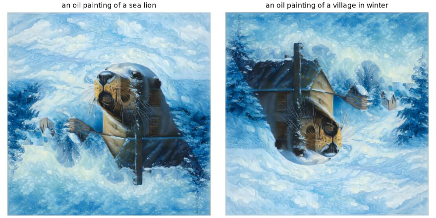

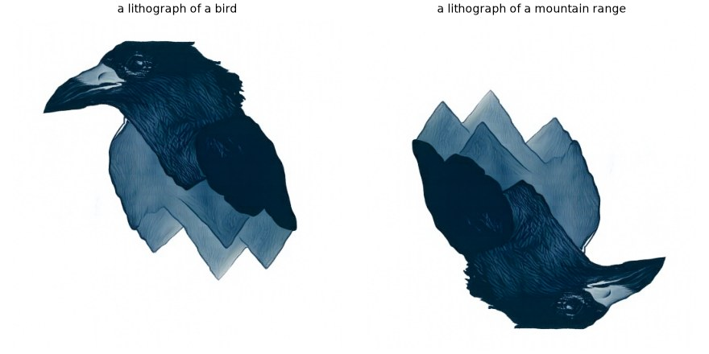
With \(F\) the \(180^\circ\) rotation (a flip of both spatial axes), visual_anagrams uses the averaged velocity
\[v = \tfrac{1}{2}\Big[v_{\mathrm{cfg}}(x, t, c_a) + F\big(v_{\mathrm{cfg}}(F(x), t, c_b)\big)\Big]\]
at every Euler step, so the upright image follows prompt \(a\) and the rotated image follows prompt \(b\).
The sea lion pair worked best. Upright, a sea lion's head and whiskers rise out of blue-white water with a few window-like shapes on its chest; rotated, those windows become a snow-covered cabin with a chimney, and the whiskered face turns into shadow under the eaves. Both readings are clear. The bird pair is weaker, and upright it is a dark crow with a crisp beak and eye, and the lighter planes behind it act as mountains once rotated, but the crow's body is still visible upside down in the mountain view, so the illusion depends on the viewer accepting a dark foreground ridge. Pairs where both subjects are dark, compact shapes like animals compete for the same pixels and do not flip cleanly, while a pair that puts a subject against a background of the other prompt's texture flips much better.
3.4 Hybrid images

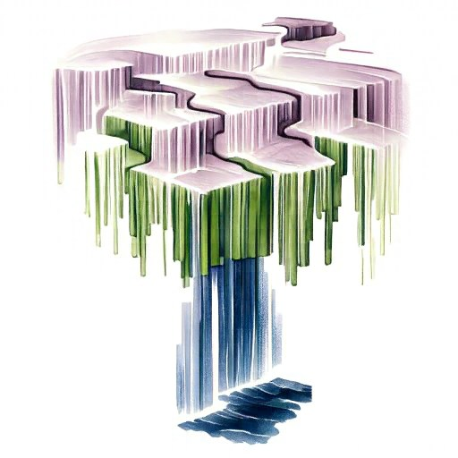

make_hybrids combines the two CFG velocities at the same \(x\) and \(t\) as
\[v = \mathrm{lowpass}(v_a) + v_b - \mathrm{lowpass}(v_b),\]
where the low-pass filter is a Gaussian with \(\sigma = 16\) and a 265-pixel kernel at \(512 \times 512\). Prompt \(a\) sets the
low frequencies seen from far away and prompt \(b\) the detail seen up close. At full size the first hybrid reads as a waterfall, and it shows a stepped, pastel-colored plateau with blue water pouring off its front edge. Shrunk to 64 pixels, the layered top and narrow stem suggest flowers in a vase, but the waterfall is still what I see first, so the low-frequency prompt only partly took hold. The second hybrid is a tall stand of dark pine trees up close, and at small size the clustered trunks and the pale, rounded base read as a seal-like silhouette with a lighter belly. Compared with the Project 2 hybrids, where I filtered the pixels of two aligned photos and got a literal overlay, filtering the velocities lets the model produce a single coherent scene whose structure happens to work at two scales, but it also means I cannot control how strongly each prompt appears, and several seeds were needed before either pair showed both subjects.
Part B: Flow Matching from Scratch
Part B1: Training a Single-Step Denoising UNet
1.1 Implementing the UNet
The UNet is built from Conv, DownConv, UpConv, Flatten, Unflatten, ConvBlock, DownBlock, and UpBlock, each a short sequence of convolution, BatchNorm, and GELU. With \(D\) hidden channels the forward pass goes \(D \times 28 \times 28 \to D \times 14 \times 14 \to 2D \times 7 \times 7 \to 2D \times 1 \times 1 \to 2D \times 7 \times 7\), then back up with skip connections concatenated at each level, ending in a \(1 \times 28 \times 28\) output.

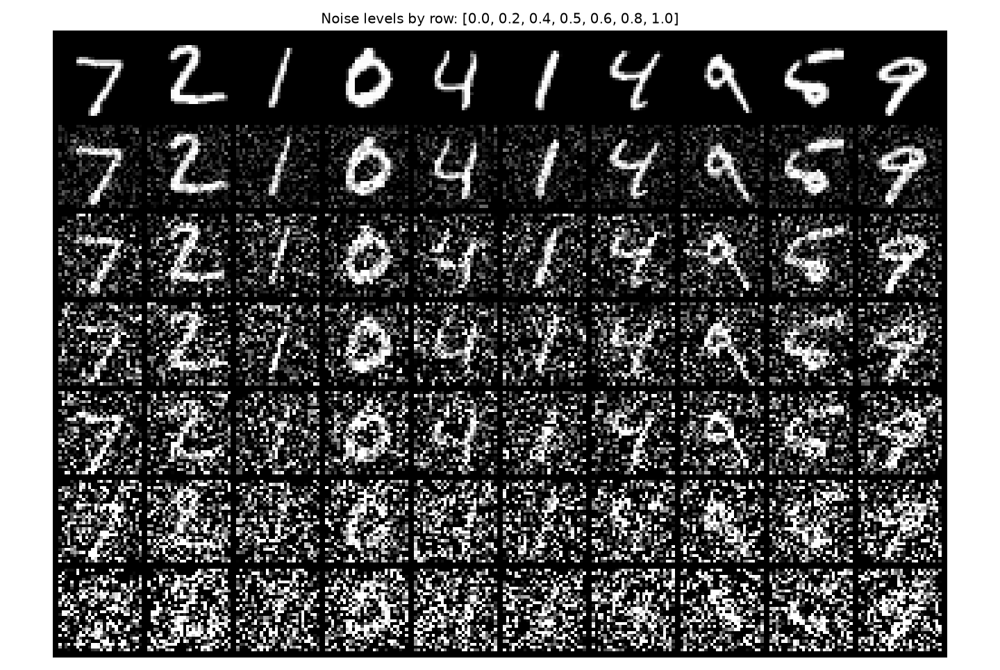
Noise is added as \(z = x + \sigma\,\epsilon\) with \(\epsilon \sim \mathcal{N}(0, I)\) on pixels in \([0, 1]\).
1.2.1 Training the denoiser

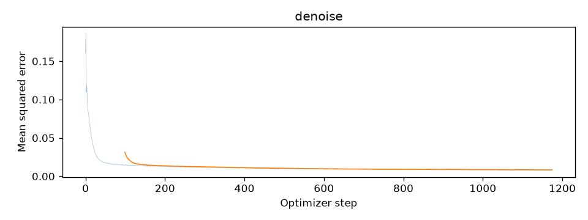
The denoiser minimizes \[L = \mathbb{E}_{x,\,\epsilon}\,\big\lVert D_\theta(x + \sigma\epsilon) - x \big\rVert^2\] with fresh noise at \(\sigma = 0.5\) drawn for every batch. I trained for 5 epochs with batch size 256, \(D = 128\), and Adam at \(10^{-4}\). The loss falls from about 0.18 to below 0.02 within the first 200 optimizer steps and then creeps down slowly, ending near 0.01 after 1,170 steps.
1.2.2 Out-of-distribution testing

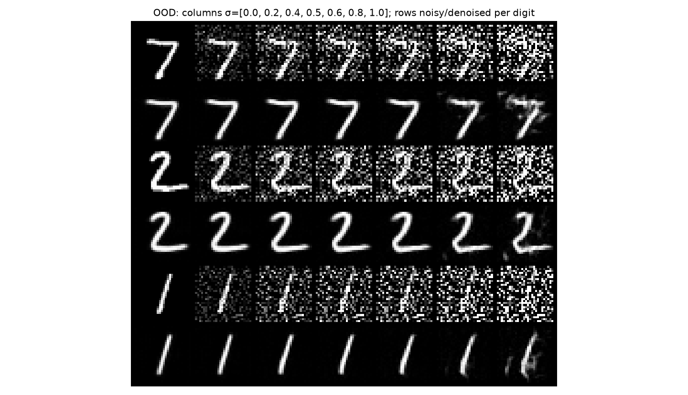
The denoiser generalizes well below its training noise level and somewhat above it. From \(\sigma = 0\) to \(0.6\) the outputs are clean, well-formed digits; a clean input passes through almost unchanged, and the model even thickens thin strokes slightly. At \(\sigma = 0.8\) the strokes get blotchy and faint, and at \(\sigma = 1.0\) the 7 and the 1 break apart into fragments and the 2 fades, because the model has never seen inputs where the signal is this weak and it treats the remaining noise as part of the digit.
1.2.3 Denoising pure noise

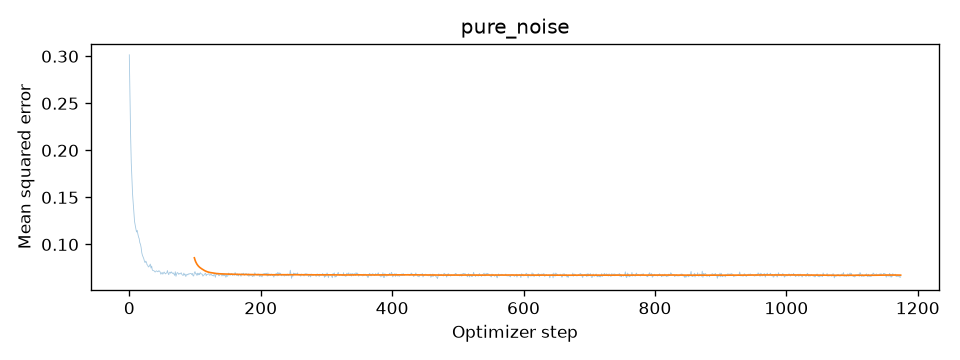

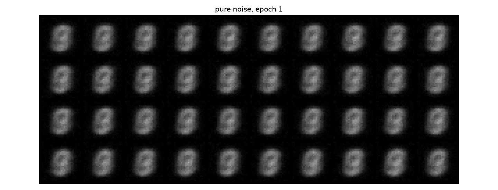

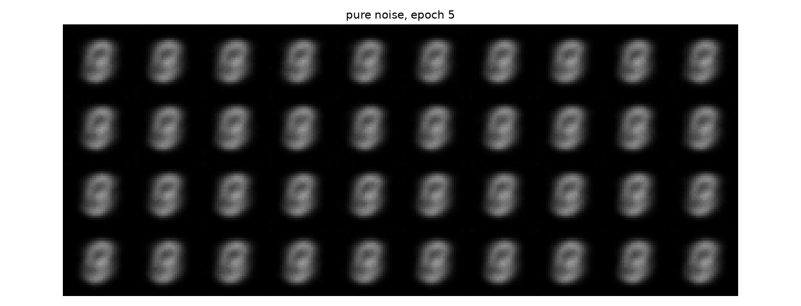
With the same architecture and hyperparameters but pure noise \(z = \epsilon\) as input, the loss plateaus almost immediately at about 0.07, roughly seven times the floor reached by the \(\sigma = 0.5\) denoiser, and every output is the same faint gray blob shaped like a rounded 0 or 8 with slightly brighter edges. Since the input carries no information about which digit is wanted, the output that minimizes the expected squared error is the mean of all training digits, and that mean is what the network learns. More epochs only sharpen this average slightly; the epoch 5 outputs are a little brighter and more oval than the epoch 1 ones but otherwise identical across all 40 samples.
Part B2: Flow Matching
2.1 Time-conditioned UNet
The time-conditioned UNet adds two FCBlocks that embed \(t\) and multiply the unflatten output (\(2D\) channels) and the first up-block output (\(D\) channels). Each training batch samples \(x_0 \sim \mathcal{N}(0, I)\) and \(t \sim U[0, 1]\), forms \[x_t = (1 - t)\,x_0 + t\,x_1,\] and regresses the velocity with \[L = \mathbb{E}_{x_0,\,x_1,\,t}\,\big\lVert v_\theta(x_t, t) - (x_1 - x_0) \big\rVert^2.\] Sampling starts from Gaussian noise at \(t = 0\) and takes 50 Euler steps \(x \leftarrow x + \Delta t\,v_\theta(x, t)\) to \(t = 1\).
2.2 Training the time-conditioned UNet

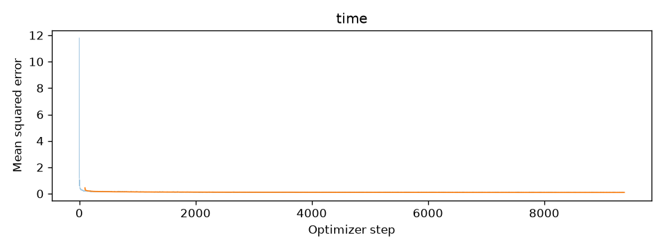
I trained for 10 epochs with batch size 64, \(D = 64\), and Adam starting at \(10^{-2}\) with an exponential schedule (\(\gamma_{\mathrm{lr}} = 0.1^{1/10}\) per epoch, reaching \(10^{-3}\)). The loss spikes to about 12 in the very first steps at the high initial learning rate, drops below 1 within a few dozen steps, and then decreases slowly toward roughly 0.1 over the remaining 9,000 steps. The curve is noisier than the single-step denoiser's because each batch mixes random times, and the target velocity at small \(t\) is nearly pure noise, so some batches are inherently harder than others.
2.3 Sampling from the time-conditioned UNet

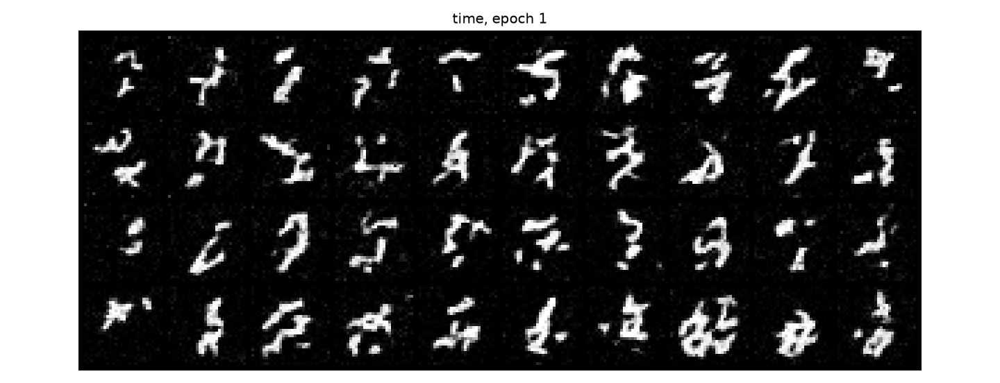

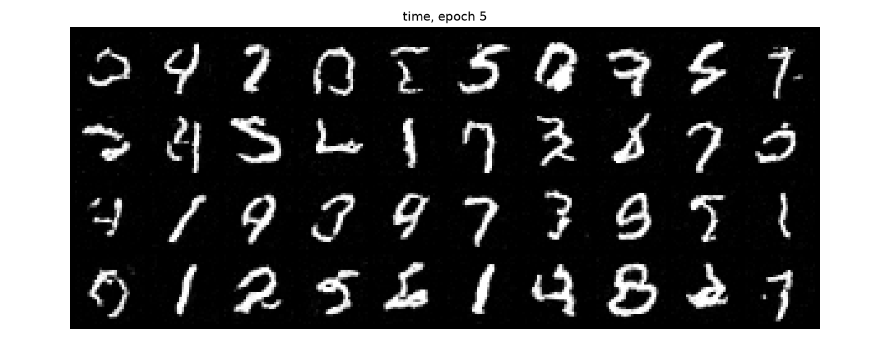

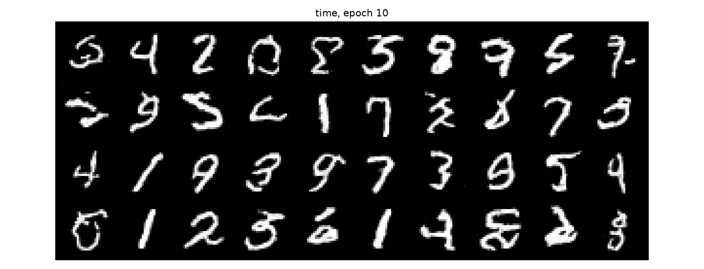
After epoch 1 the samples are bright fragments and scribbles on a noisy background, with almost nothing that reads as a digit. After epoch 5 most samples are recognizable digits with clean backgrounds, though several are ambiguous, for example shapes between a 3 and a 5 or a 4 and a 9. After epoch 10 the strokes are smoother and more confident and most of the grid is clearly legible, but since nothing tells the model which digit to draw, a few samples remain in-between shapes and the loops of 8s and 9s are the most common failures.
2.4 Class-conditioned UNet
The class-conditioned UNet adds two more FCBlocks that embed a one-hot class vector \(c\) and modulate the same two activations as the time embeddings. During training the one-hot is zeroed with probability \(p_{\mathrm{uncond}} = 0.1\), so the network also learns the unconditional velocity needed for classifier-free guidance.
2.5 Training the class-conditioned UNet

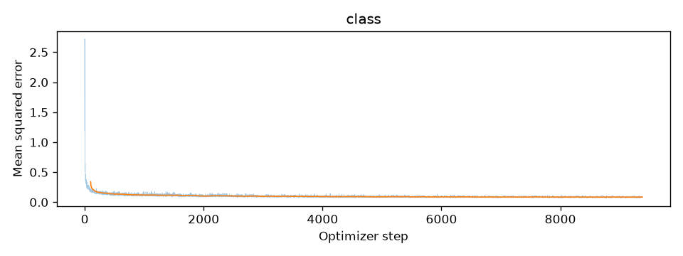

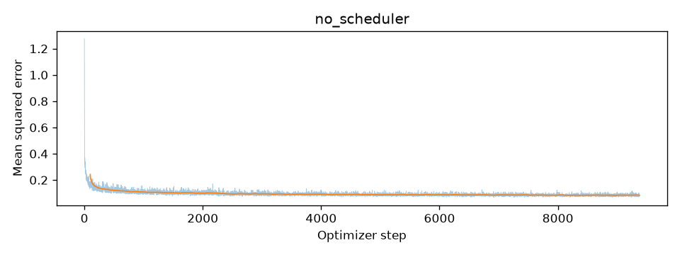
Training uses the same settings as Section 2.2 plus class dropout \(0.1\). For the comparison run I removed the scheduler and used a constant learning rate of \(10^{-3}\). The scheduled run starts at a higher loss, around 2.7, because of the larger initial learning rate, but drops below 0.2 within the first 100 steps and settles near 0.08 with little noise as the learning rate decays. The constant-rate run starts lower, around 1.3, converges more slowly, and stays noisier throughout, ending near 0.1. The decaying schedule gives both faster early progress and a smoother, slightly lower final loss.
2.6 Sampling from the class-conditioned UNet

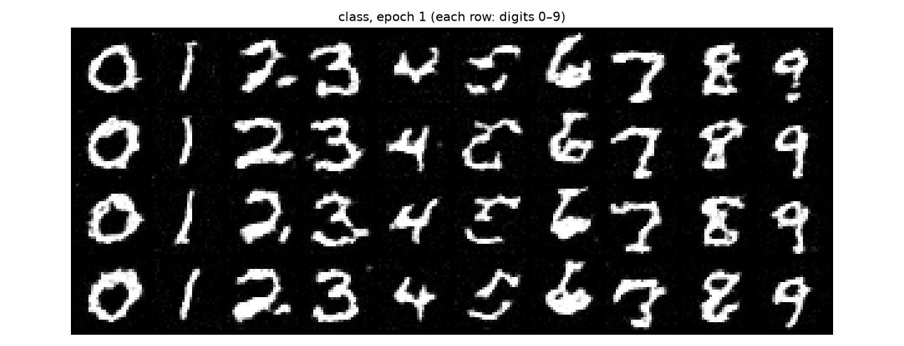

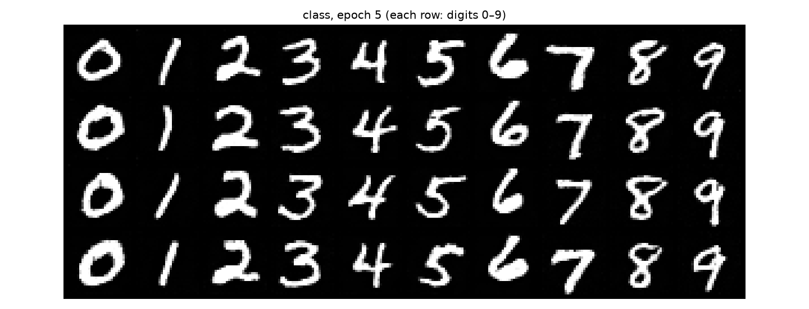

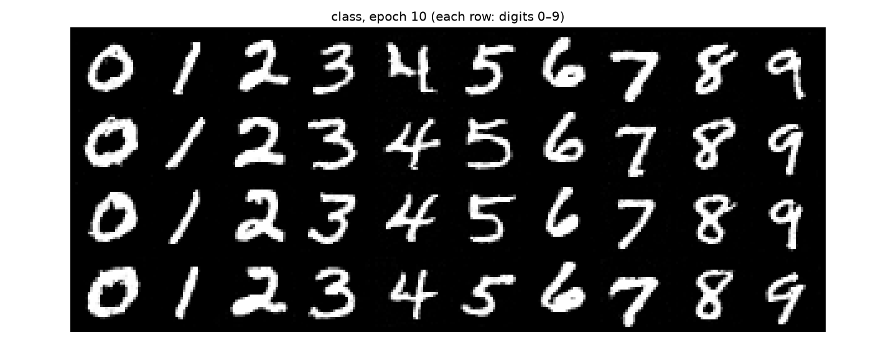

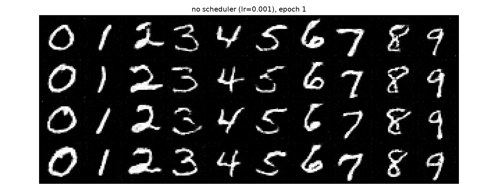

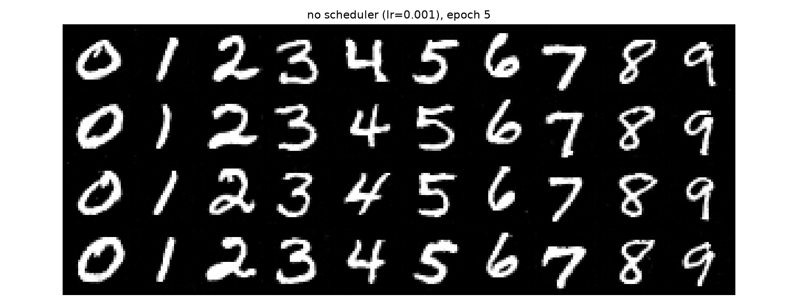

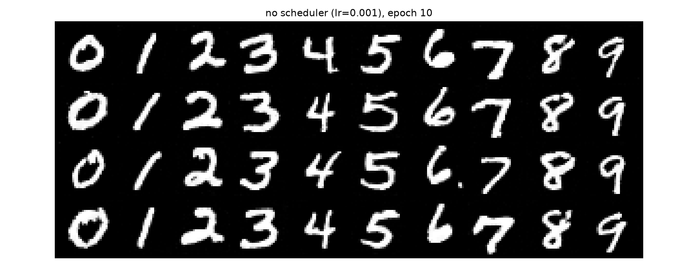

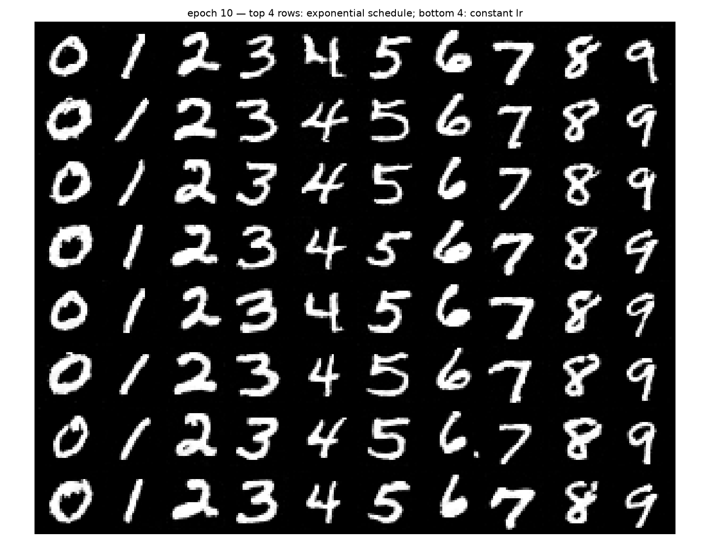
Sampling uses \[v = v_u + \gamma\,(v_c - v_u), \qquad \gamma = 5,\] with 300 Euler steps and seed 0, generating four instances of each digit. With class conditioning and guidance, every sample is the requested digit from the very first epoch, and the epoch 1 grid is already legible, with only some wobbly 5s and 8s, and by epoch 5 the digits are clean and bold with varied but plausible handwriting styles. Epoch 10 looks similar to epoch 5, with slightly thicker, more uniform strokes. Compared with the unguided time-conditioned samples, the guided digits have crisper, more consistent strokes and no ambiguous shapes, at the cost of less variety within each class. The constant-rate run also produces legible digits at every epoch, but its epoch 1 grid is noisier and thinner than the scheduled run's, and at epoch 10 a few of its samples are malformed, for example a broken 6 in the third row of the comparison grid. The scheduled run benefits from the large initial learning rate for fast progress and from the decay for stable fine-tuning, whereas the constant low rate is stable but never gets the fast early phase, so it lags at epoch 1 and still shows a few artifacts at epoch 10.
What I learned
Part A showed how much the starting time controls the balance between the input and the prompt. A small change from \(t = 0.06\) to \(0.14\) might turn a new image into a small edit, and the right window depends on the image, and a high-contrast distinct keep much more of their overall structure than other images. Classifier-free guidance also had a bigger effect than I expected, turning blurry photos into sharper images, though they were still all quite uncanny. The anagrams and hybrids showed that weighting velocities is a way to steer generation, but also that success depends heavily on choosing prompts whose structures can share pixels; also seeds are extremely important to image generation. I got lots of null outputs/fully gray ones from some prompts and seeds. For Part B, I thought it was just interesting to see how flow models work under the hood. While everything seemed relatively straightforward, training different models gave me a better intuition and idea of how model architectures develop. I think adding conditioning and doing research (talking to LLMs and finding articles) while building helped me see the motivations for the choices that are made for model architecture.